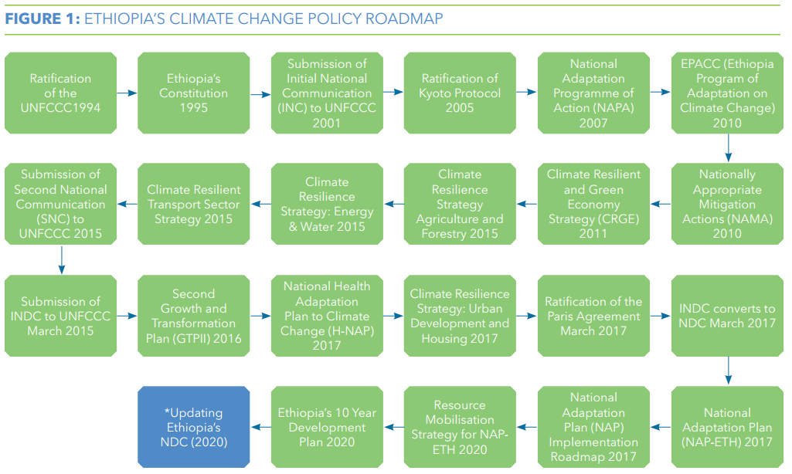
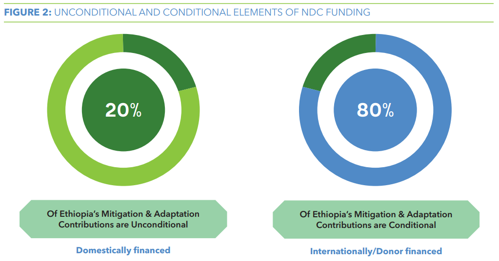
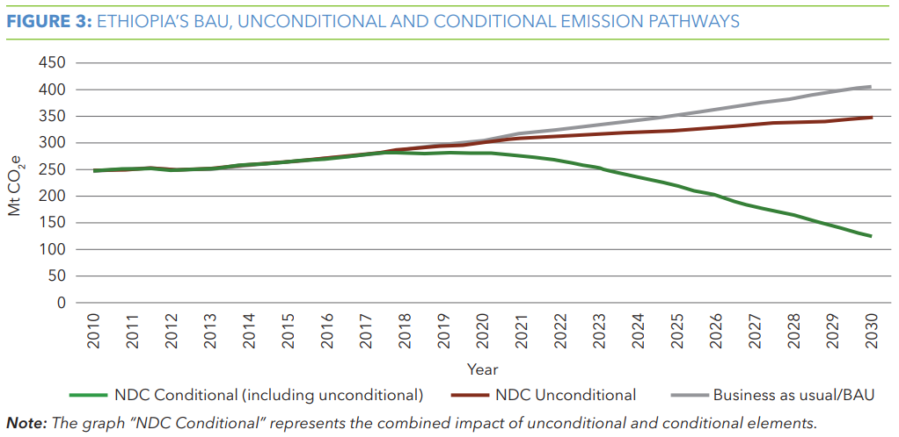
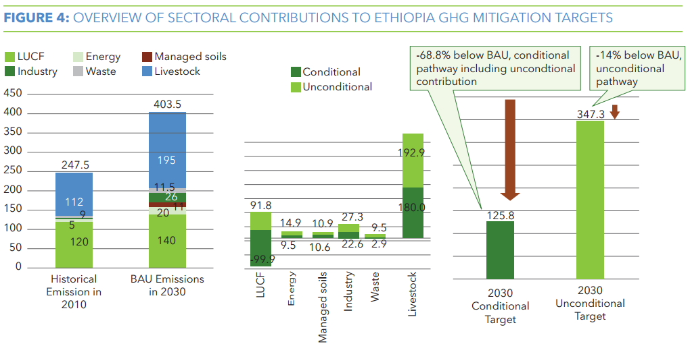
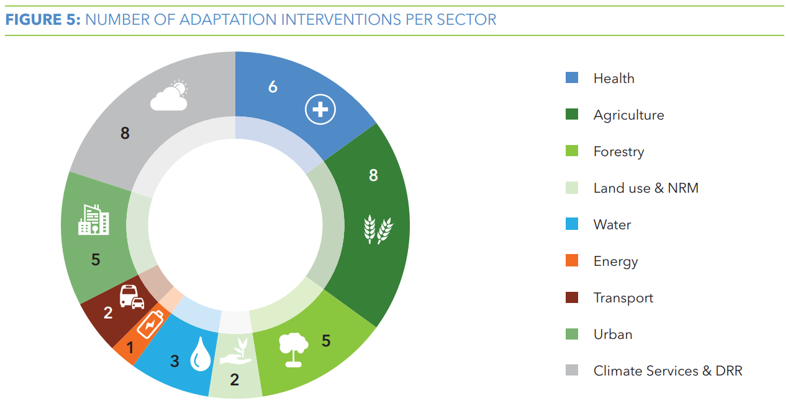
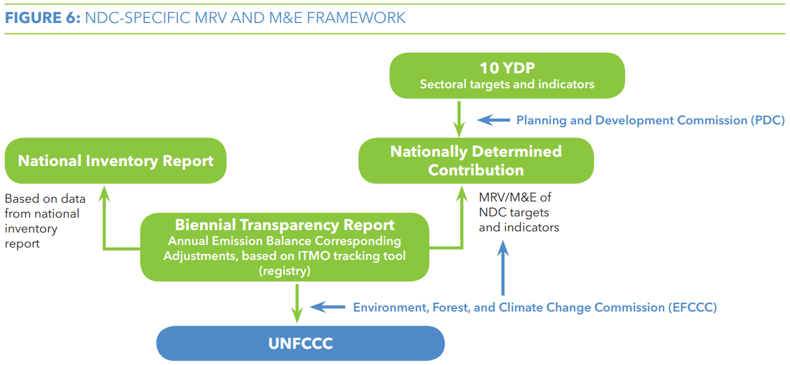
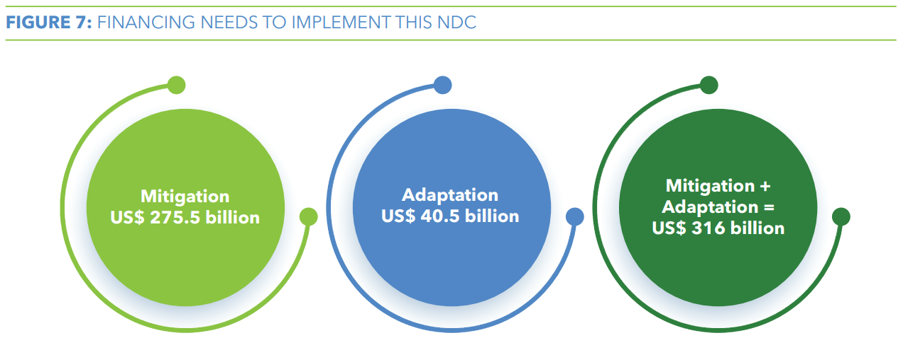
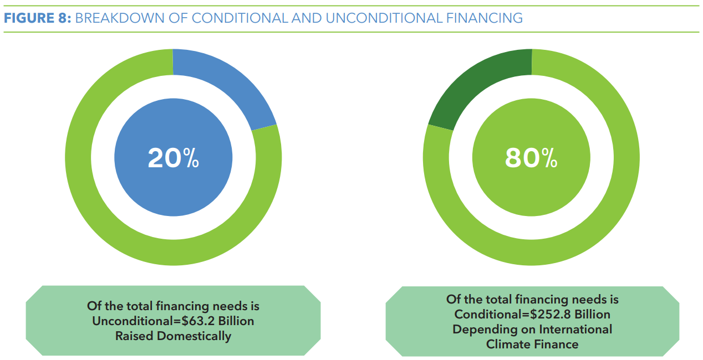

JULY 2021
Federal Democratic Republic of Ethiopia
UPDATED NATIONALLY DETERMINED CONTRIBUTION iii
10YDP 10-Year Development Plan
AFOLU Agriculture, Forestry and Other Land Use AR5 IPCC Fifth Assessment Report
BAU Business-As-Usual
BTR Biennial Transparency Report
BUR Biennial Update Report
CCU Climate Change Units
CDM Clean Development Mechanism
CMA Conference of the Parties serving as the meeting of the Parties to the Paris Agreement CO2e Carbon Dioxide Equivalent
COP Conference of the Parties
CORSIA Carbon Offsetting and Reduction Scheme for International Aviation COVID-19 Novel Coronavirus 2019
CRGE Climate Resilience and Green Economy Strategy CSA Central Statistics Agency
EFCCC Environment, Forest and Climate Change Commission EPACC Ethiopian Program of Adaptation on Climate Change ETF Enhanced Transparency Framework
GDP Gross Domestic Product
GEM Green Economy Model
GHG Greenhouse Gases
GoE Government of Ethiopia
GTP II Second Growth and Transformation Plan GWPs Global Warming Potentials
HFCs Hydrofluorocarbons
H-NAP National Health Adaptation Plan to Climate Change ICAO International Civil Aviation Organization
INC Initial National Communication
INDC Intended Nationally Determined Contribution IPCC Intergovernmental Panel on Climate Change ITMO Internationally Transferred Mitigation Outcomes IWUAS Irrigation Water User Associations
KP Kyoto Protocol
LDC Least Developed Country
LMP Livestock Master Plan
LT-LEDS Long Term Low Emission Development Strategy LUCF Land Use Change and Forestry
M&E Monitoring and Evaluation
MDB Multilateral Development Bank
MEFCC Ministry of Environment, Forest and Climate Change MoA Ministry of Agriculture
MoF Ministry of Finance
MoT Ministry of Transport
MoWIE Ministry of Water, Irrigation and Electricity MRV Measuring, Reporting and Verification MSW Municipal Solid Waste
Mt Megatons
NAMA Nationally Appropriate Mitigation Actions NAP National Adaptation Plan
NAP-ETH Ethiopia’s National Adaptation Plan 2019 NC National Contribution
NDC Nationally Determined Contributions NMA National Meteorological Agency
PA Paris Agreement
PDC Planning and Development Commission RE Renewable Energy
REDD+ Reducing Emissions from Deforestation and Forest Degradation SDGs Sustainable Development Goals
SNC Second National Communication
UNCBD United Nations Convention for Biodiversity
UNCCD United Nations Convention to Combat Desertification
UNECA United Nations Economic Commission for Africa
UNFCCC United Nations Framework Convention on Climate Change
WRI World Resources Institute
The Federal Democratic Republic of Ethiopia remains committed to an ambitious contribution towards the Paris Agreement goals of containing the global average temperature increase below 2°C above pre-industrial levels and pursuing efforts to limit temperature increases to 1.5°C. Given the devastating impacts that climate change is already having on our people, environment and economy, it is imperative that immediate global climate action is taken to increase climate resilience and reduce greenhouse gas emissions. Recognizing Ethiopia’s national circumstances and capabilities, this updated Nationally Determined Contributions (NDC) represents a clear progression in ambition with 68.8% emissions reduction target by 2030 from the Business-As-Usual (BAU) scenario, which also seeks to inspire others to increase their contribution to this collective effort.
Ethiopia’s NDC is built on its Climate Resilience and Green Economy Strategy (CRGE) and set out an ambitious development trajectory that aims to reach lower-middle-income status. The CRGE is continuing to be one of the strategic pillars of the 10-Year Development Plan (10YDP) during in the NDC implementation period. We have undertaken economy-wide analysis and comprehensive stakeholder engagement to update our NDC, which builds on Ethiopia’s 1st NDC. These efforts generated a robust evidence base for identifying and prioritising mitigation and adaptation contributions, establishing intermediate indicators to measure progress towards the updated targets, and strengthening Measuring, Reporting and Verification and Monitoring and Evaluation systems.
This updated NDC provides a suite of sectoral priority interventions that will guide sectors, development partners, development financing institutions, the private sector, and other stakeholders in implementing the activities set out in this document. Ethiopia can achieve the ambitious vision presented in this updated NDC only in cooperation with our partners. Therefore, this is a call to action to all stakeholders to join hands and contribute to the realisation of this ambitious updated NDC.
Professor Fekadu Beyene
Federal Democratic Republic of Ethiopia, Commissioner for the Environment,
Forest, and Climate Change Commission (EFCCC)
Foreword
This document presents Ethiopia’s update to its first NDC, covering the period between 2020 and 2030. It builds upon several national climate and development policy initiatives including the first NDC, the CRGE mid-term review, the emerging 2050 Long Term Low Emission Development Strategy (LT-LEDS), the Green Legacy Initiative, and Ethiopia’s 10YDP which considers CRGE as one of its strategic pillars for the period 2020-2030.
As part of this updating process, the Government of Ethiopia (GoE) has undertaken economy-wide analysis using Green Economic modelling (GEM) and comprehensive stakeholder engagement. The economic data and greenhouse gases (GHG) data and information have been thoroughly updated which led to a substantially revised BAU pathway, as well as a clearer demarcation of the unconditional and conditional elements of the proposed actions. As a result, there are some changes to the first update submission Ethiopia made in December 2020. These steps have been taken to ensure the updated NDC is in full alignment with growth and development pathways of national planning frameworks and policies, and fully vetted with stakeholders.
In determining mitigation contributions, the following activities were undertaken: (i) updating the BAU GHG emission pathway, (ii) preparing GHG emission reduction pathways to 2030 (national and sectoral), (iii) setting 2025 and 2030 mitigation targets consistent with Ethiopia’s strong political ambition and readiness to act on climate change, (iv) assessing and prioritizing mitigation interventions and indicator selection through a consultative process, (v) disaggregating conditional and unconditional contributions, and
(vi) reviewing the role of carbon markets in the enhanced NDC.
In determining adaptation contributions, the following activities were undertaken: a review of Ethiopia’s adaptation policy, institutional landscape, and their respective challenges; setting a 2018 baseline and 2030 targets; prioritization of 40 adaptation interventions and the selection of accompanying indicators. Apart from this, a review of Ethiopia’s current measuring, reporting and verification (MRV) and monitoring and evaluation (M&E) systems was also conducted.
1. Introduction
Ethiopia is a land-locked country located in the Horn of Africa and shares borders with Eritrea to the north, Djibouti and Somalia to the east, Sudan and South Sudan to the west, and Kenya to the south. Ethiopia’s topography is characterized by large regional differences, which are reflected in its climate. The lowlands in the southeast, covering approximately 55% of the countries land area and northeast are tropical with average temperatures of 25-30°C, while the central highlands (over 1500 meters in elevation, covering about 45% of the country’s surface) are much cooler with average temperatures around 15-20°C. The highland plateau is divided by the East African Rift Valley. Mean annual rainfall ranges from less than 300 mm in the south-eastern and north- western lowlands to over 2,000 mm in the south- western highlands. Because of this latitudinal and altitudinal contrasts, the climate system is equally extraordinarily complex.
Ethiopia is also one of the least developed countries in the world and is the second-most populous country in Africa with a population of more than 100 million (CSA, 2013). The country has endorsed a climate resilient green economic path since 2010 and has registered dramatic economic growth, with a growth rate averaging 9.2% a year from 2010/11 to 2019/20. This growth rate is high when compared to a regional average of 5.4% (PDC, 2021). The high growth rates have been also accompanied by structural transformation. This is evidenced by the fact the share of the agricultural sector to GDP decreased to 32.7% in 2019/20 from 45.7 in 2010/11 while the construction and services sectors made up the majority of the growth. The share of the constructions and the service sectors from the total GDP reached as high as 21.1 and 39.5, respectively, in 2019/20. All this while, the rate of poverty has declined from 29.6% in 2010/11 to 23.5% in 2019/20 (PDC, 2021).
Ethiopia has heavily invested in road and railway infrastructure, industrial parks universities, and the energy sector over the last decades. The 10YDP aims to build on the enhanced physical infrastructure to promote the industrial sector and achieve successful economic transformation. It envisions increasing the share of the manufacturing from the total GDP from the current level of 6.9% to 17.2% by 2030 (PDC, 2021). The plan also aims to achieve an average economic growth of 10% in the coming ten years (PDC, 2021). Agriculture, manufacturing, tourism, urban development and the mining sectors are going to be the priority sectors. The plan has also mainstreamed Sustainable Development Goals (SDGs) and climate resilient green economy in different sectors. This ensures that the legacy of green economic development path will extend into the future.
The Ethiopian economy is vulnerable to climate change. This is because the agriculture sector,
2. National Circumstances
which employed 78% of the country’s labour force in 2013, heavily relies on rainfall. Apart from this, nearly 80% of the population of Ethiopia lives in the rural area where most of them are smallholders who practice low input and low output farming in a very fragmented land (CSA, 2015). The vulnerability of the sector to climate change has urged the Ethiopian government to design strategies to mitigate the possible impacts of climate change. Hence, mitigation and adaptation activities have been already included in the sectoral plans and various initiatives. For example, the Agriculture Growth Program (AGP), the Livestock Master Plan (LMP), Livestock & Fisheries Sector Plan (LFSP) and the Sustainable Land Management Programme (SLMP) are critical programs in the agriculture sector and are also included in the National Adaptation Plan (NAP). The AGP enables improving agricultural productivity and commercialization of targeted smallholder farmers. The SLMP has been a way for mainstreaming green economy needs into sectoral programmes at all levels and it has been configured to the safety net programmes. NAP is a critical part of the CRGE that focuses on adaptation programs taken by each sector to build climate resilient economy. The ten years’ development plan inculcated the CRGE and the NAP to build climate resilient green economy in the coming years.
COVID-19 pandemic has exacerbated the vulnerability of Ethiopia and resulted in extensive disruption to lives and livelihoods. Ethiopia is currently facing a double threat from climate change and the COVID-19 pandemic. According to official figures, Ethiopia’s economy grew at 6.1 percent in the financial year 2020, compared to 9 percent in 2019. Remittance declined by 10 percent in 2020, and Foreign Direct Investment inflows were 20 percent lower, affecting already thin financially reserve levels and increasing external financing needs. An economic rebound is expected in 2021 to achieve a modest rate of 6% growth. However, other crises, although of smaller magnitude but serious nevertheless, have contributed to Ethiopia’s vulnerability. These include a desert locust invasion that affected at least one million people; erratic rainfall that disrupted the country’s dominant rain-fed agricultural sector as well as cholera, measles, and yellow fever outbreaks. Combined, these factors have a significant systemic shock that has profound implications for Ethiopia, both for short- and medium- to long-term which now require to be considered in all developmental planning processes,1 including updating of Ethiopia’s NDC. Nevertheless, the disruptions caused by the COVID-19 Pandemic also offer an opportunity to ‘build forward greener’. This NDC, mainstreamed in to the ten years development plan, sets out Ethiopia’s priorities in building its low carbon climate resilient future.
Ethiopia’s contribution to the global GHG emission is infinitesimal (currently estimated at 0.04%) (Crippa, 2019). But the country is highly vulnerable to the impacts of climate change. This is due to Ethiopia’s high dependence on rain- fed agriculture and natural resources, as well as its relatively low adaptive capacity. There is considerable evidence of climate change impacts in Ethiopia over the last 50 years. At the national level, temperatures have increased by an average of around 1°C since the 1960s. Rainfall is subject to high inter-annual and intra-annual variability. Yearly variation around mean rainfall level is 25% and can increase to 50% in some parts of the country. Despite this complexity, there is evidence of a 20% decrease in rainfall in the south-central region of the country. Extreme weather events are common, especially drought and flood, with indications that their frequency of occurrence has increased in the last ten years, relative to the decade before.
The impact of climate change and variability is already being experienced in almost all sectors with different intensity across the country. Water scarcity and drought conditions are expected to further increase risks of food insecurity and may exacerbate conflict situations over scarce resources and population movements. Heavy rains, flooding and soil erosion put both urban and rural infrastructures at risk, particularly for poor and vulnerable groups. Increased occurrences of drought conditions and reduced rainfall across much of the country will further impact agriculture, livestock, food security and human health. Environmental degradation impacted water resources, and the loss of biodiversity and ecosystem services constitute serious obstacles to the country’s continued development and poverty reduction efforts, increasing vulnerability to risks and hazards, and heightening the importance of sustainable adaptation and resilience measures. Across all of these measures, consideration of gender equality and inclusion of vulnerable groups and communities is essential for design and implementation to move towards equitable outcomes.
Ethiopia’s policy framework for climate change mitigation and adaptation has progressively evolved since the ratification of the United Nations Framework Convention on Climate Change (UNFCCC) in 1994. As part of its commitment, Ethiopia submitted to the UNFCCC its Initial National Communication (INC) in 2001 and Second National Communication (SNC) in 2015. The country also launched National
FIGURE 1: ETHIOPIA’S CLIMATE CHANGE POLICY ROADMAP

Adaptation Plan of Action in 2007, Ethiopian Program of Adaptation on Climate Change and Nationally Appropriate Mitigation Actions in 2010. Ethiopia has endorsed a Climate Resilient Green Economy (CRGE) strategy to build a green and resilient economy in 2011. Apart from this, sectoral policies and strategies have been formulated to provide tailored and sector- specific strategic interventions. These include the following: the Climate Resilience Strategy for Agriculture and Forestry (2015); the Climate Resilience Strategy for Energy and Water (2015); the Climate Resilient Strategy for the Transport Sector (2015); the National Health Adaptation Plan to Climate Change (H-NAP, 2017) and the Climate Resilience Strategy for Urban Development and Housing (2017).
Ethiopia submitted its Intended Nationally Determined Contribution (INDC) in 2015 and ratified the Paris Agreement (PA) in March 2016, turning its INDC into its NDC. Ethiopia’s first NDC aspired to reduce emissions from all sectors by 64% by 2030 from BAU scenario. As part of the endeavor to bolster national adaptive capacity, Ethiopia developed its National Adaptation Plan (NAP-ETH) in 2017. In order to implement NAP, subsequent strategies, notably the gender analysis for NAP; the National Adaptation Plan (NAP) Implementation Roadmap and NAP-ETH Resource Mobilization strategy were developed between 2018 and 2020.
Ethiopia has been implementing its climate change policy by mainstreaming into national development plans. In this regard, the CRGE strategy was mainstreamed into the Second Growth and Transformation Plan (GTP II) for the 2015-2020 period. The newly endorsed 10YDP has also set building climate resilient green economy as one of its strategic pillars. Ethiopia has also updated its NDC building on the 10YDP and with extensive review and participation of relevant stakeholders. The following figure summarizes Ethiopia’s climate change policy roadmap since 1994.
Ethiopia has progressively put in place an institutional architecture which follows sectoral approach to implement CRGE/NDC interventions. In this regard, the Environment, Forest and Climate Change Commission (EFCCC), is the lead agency for the coordination of Ethiopia’s response to climate change and is the national focal point to the UNFCCC; it formulates environmental laws and standards; and develops, coordinates and guarantees the implementation of sectoral programs and plans. A CRGE Facility was established in 2013, overseen by Ministry of Finance, which is responsible for financial aspects of CRGE implementation, while the Environment, Forests, and Climate Change Commission (EFCCC) is responsible for technical elements and day-to-day administration, as well as developing guidance and rules for CRGE implementation. The institutional arrangements reflect a cross-sectoral, multi-disciplinary approach organized through bodies like the inter-ministerial and management committee and allows for regional engagement. Most relevant line ministries have in-house CRGE directorates, units, or bureaus that focus on climate change policy implementation.
The NDC updating process has gone through a series of steps including extensive document review, data collection, model development and validation, as well as stakeholder consultations. In addition to this, the recent IPCC 2006 guideline has been used for estimating the GHG emission. The updating process employed Ethiopia’s Green Economy Model (GEM) to project the GHG emission pathways taking into consideration the Ethiopian development ambition from 2020 to 2030. Relevant data was collected from pertinent sources and sectors. In this regard, a recently updated livestock inventory, and updated global warming potentials (GWPs) as per the most recent IPCC Assessment Report (AR5) were used.
The technical analysis of the mitigation component comprises of five concisely defined methodological steps:
Preparing an updated BAU scenario
Preparing updated GHG abatement policy scenarios for 2030
Setting 2025 interim and 2030 final NDC targets
Prioritizing mitigation interventions and indicator selection and,
Determining conditional and unconditional policy action
The adaptation component is based on a review of existing documents including NAP-ETH, the NAP implementation road map and its resource mobilization strategy, as well as the various sector-based vulnerability assessments. Then, the long list of actions has been discussed and prioritized. The required resource for realizing the NDC was estimated based on goals and targets of the 10YDP. The financial estimation further disaggregated the total required resource in to conditional and unconditional components. In addition, detailed gender and institutional capacity gap analyses were conducted to inform NDC updating process.
The updated NDC represents a clear progression in ambition for the following reasons:
Higher robustness of GHG emissions pathways and targets through improvements in methodology, thereby more accurately and completely capturing historical emissions and emissions pathways through greater alignment with national GHG inventories, revised emission factors and improved consistency with the IPCC’s 2006 guidelines.
Ethiopia proposes an emission reduction target of 68.8% which is more ambitious compared to its first NDC (64%).
Inclusion of a detailed adaptation baseline and 2030 targets. The first NDC did not have a quantified baseline and targets.
Clear demarcation between unconditional and conditional mitigation and adaptation interventions, with a meaningful domestic contribution, unlike the first NDC.
Commitment to explore further ambition increases during the NDC commitment period.
This includes potentially enhancing Ethiopia’s NDC ambition by reducing emissions currently outside the scope of this NDC update, for instance for GHGs not covered by the current NDC (e.g., Hydrofluorocarbons (HFCs) in the context of the Kigali Amendment to the Montreal Protocol) where GoE initiatives on sustainable cooling are already underway and further mitigation potential exists.
Inclusion of additional adaptation interventions per sector.
Better adaptability and flexibility of the methodology to potential future changes of policies and external shocks.
An enhanced ability to track progress on mitigation and adaptation actions with improved MRV/M&E.
The level of ambition that can be achieved unconditionally, and the level of international support required to achieve conditional targets, indicates noteworthy progress in this updated NDC. The proposed NDC’s policy interventions are sector-wide programmatic actions, comprising many different activities requiring both domestic and international investment. Based on the experience of other countries and the economic realities of Ethiopia, it is proposed that 20% of the total reduction will be domestically financed while the remaining 80% shall be financed by international support. Although exceptions have been applied where mitigation interventions rely fully on international support, this guide is regarded as appropriate when considering Ethiopia’s marginal historical responsibility and least developed country (LDC) status, domestic resource availability and sustainable development priorities. This split assumes that Ethiopia will implement the least-cost mitigation actions first to achieve its unconditional targets.
FIGURE 2: UNCONDITIONAL AND CONDITIONAL ELEMENTS OF NDC FUNDING

The base year and BAU emission projections of the updated NDC differ from the 1st NDC because of differences in the methods of estimation and the updated data used compared to the first NDC. In this regard, the updated base year emissions in 2010 are estimated at 247 million metric tonnes of carbon dioxide equivalents (Mt CO2e) which are projected to increase to a level of 403.5 Mt CO2e in the BAU scenario in 2030. The projections are further divided into three pathways, i.e., unconditional, conditional and BAU. The unconditional pathway will result in absolute emission levels of 347.3 Mt CO2e in 2030, which represents a reduction against the revised BAU of 14% (-56 Mt CO2e) in 2030. The impact of further policy interventions proposed under the conditional pathway decreases absolute emission levels to 125.8 Mt CO2e such that the combined impact of unconditional and conditional contributions represents a reduction of 68.8% (-277.7 Mt CO2e) in comparison with the revised BAU emissions in 2030 (Figure 3). This ambitious pathway is conditional on international support and includes Ethiopia´s unconditional efforts.
FIGURE 3: ETHIOPIA’S BAU, UNCONDITIONAL AND CONDITIONAL EMISSION PATHWAYS

FIGURE 4: OVERVIEW OF SECTORAL CONTRIBUTIONS TO ETHIOPIA GHG MITIGATION TARGETS

Figure 4 above provides an overview of how each of the different sectors will contribute to this overall reduction.
It is crystal clear that the Ethiopian economy will undergo structural change in the coming years. The 10YDP signifies that the base of the economy will be anchored on the manufacturing sector. In addition to this, there will be high pace of urbanization. These emerging realities will have their own cumulative repercussion on the pattern of emission. Thus, emissions from industry and energy are expected to increase by a larger percentage compared to other sectors (Table 1). Nevertheless, the agricultural sector, particularly livestock will remain as the main contributor to the GHG emission in the coming years followed
TABLE 1: GHG EMISSION PROJECTIONS IN BAU, UNCONDITIONAL AND CONDITIONAL PATHWAYS
|
Sector |
BAU emission projection (Mt CO2e) |
Unconditional emission projection (Mt CO2e) |
Conditional emission projection (incl. unconditional) (Mt CO2e) |
||||
|
2020 |
2025 |
2030 |
2025 |
2030 |
2025 |
2030 |
|
|
Industry |
5.9 |
12.7 |
26.1 |
12.9 |
27.3 |
10.2 |
22.6 |
|
Energy |
10.7 |
14.4 |
20.0 |
12.7 |
14.9 |
10.4 |
9.5 |
|
LUCF |
125.0 |
133.8 |
140.2 |
112.6 |
91.8 |
21.4 |
-99.9 |
|
Livestock |
146.4 |
169.5 |
194.8 |
168.7 |
192.9 |
162.8 |
180.0 |
|
Managed Soils |
5.8 |
8.1 |
11.0 |
8.0 |
10.9 |
8.0 |
10.6 |
|
Waste |
9.1 |
10.3 |
11.5 |
9.4 |
9.5 |
6.0 |
2.9 |
|
TOTAL (Mt CO2e) |
302.9 |
348.8 |
403.5 |
324.3 |
347.3 |
218.8 |
125.8 |
by the Land Use and Forestry sector. Both sectors together represent 83% (LUCF 35% and livestock 48%) of total BAU emissions in 2030. Important to note is that LUCF accounts for emissions from biomass use e.g., for cooking and baking, which is the single largest driver of LUCF-related emissions. The following table describes the contribution of each sector and sub sector to aggregate unconditional and conditional emission reduction targets, ordered by mitigation potential in each of the respective sector categories.
Whereas the mitigation potentials are represented at sector level considering all sector-relevant policies and variables as underlying interlinked drivers of emissions, activity level emission reductions are monitored and verified through sectoral MRV systems upon implementation of each activity in the context of the 10YDP. The projected emission reduction potential estimates by sector and pathways are described in detail in Table 2.
In the following sections, a detailed overview of sectoral emission and mitigation profiles will
be presented. The conditional targets include unconditional ones for all sectors.
Emissions in LUCF originate from net changes in the stock of carbon in the country, largely emanated from land conversion and emissions from biomass energy use. Unlike the first NDC, which only considered forest land as a land category, this stock of carbon is determined by the dynamics among all types of land classes namely wetland, forest land, grass land, crop land, settlement, and other land. The result has shown that Land Use Change and Forestry (LUCF) have the largest mitigation potential as a result of highly ambitious reforestation and forest restoration targets (Table 2). At the same time, LUCF is the second most important driver of emissions under BAU assumptions (Table1). Policy interventions reduce the emission level in 2030 to -99.9 Mt CO2e (under the conditional pathway) which turns the entire sector into a
TABLE 2: SECTORAL EMISSIONS IN THE BUSINESS-AS-USUAL/BAU AND MITIGATION POTENTIALS BY SECTOR AND CONDITIONALITY
|
Sector |
BAU emission projection (Mt CO2e) |
Unconditional mitigation potential (Mt CO2e) |
Conditional mitigation potential (incl. unconditional) (Mt CO2e) |
|||
|
2025 |
2030 |
2025 |
2030 |
2025 |
2030 |
|
|
Industry |
12.7 |
26.1 |
-0.2 |
-1.2 |
2.5 |
3.5 |
|
Energy |
14.4 |
20.0 |
1.7 |
5.1 |
4.0 |
10.5 |
|
LUCF |
133.8 |
140.2 |
21.2 |
48.4 |
112.3 |
240.1 |
|
Livestock |
169.5 |
194.8 |
0.8 |
1.8 |
6.7 |
14.8 |
|
Managed Soils |
8.1 |
11.0 |
0.0 |
0.1 |
0.1 |
0.3 |
|
Waste |
10.3 |
11.5 |
0.9 |
2.0 |
4.3 |
8.6 |
|
TOTAL (Mt CO2e) |
348.8 |
403.5 |
24.5 |
56.2 |
129.9 |
277.7 |

significant GHG sink (Table 1 & Table 3). This equals a relative reduction of emissions of 171% (-240.1 Mt CO2e) compared to BAU emissions in LUCF by 2030. The unconditional pathway foresees a reduction of emission levels to 91.8 Mt CO2e, which represents a relative reduction of 34.6% of sectoral BAU emissions in 2030 (-48.4 Mt CO2e) (Table 2).
The potential for net emission removals in LUCF can be realized through massive reforestation and restoration of a total of up to 15 million hectares (ha) as a long-term forestry sector goal, based on Ethiopia´s Forest Sector Development Plan, the Green Legacy Initiative and Reducing Emissions from Deforestation and Forest Degradation (REDD+) strategic actions. Realizing this ambitious plan will increase forest cover to 30% of the national territory by 2030. The other most important driver of LUCF emissions is biomass energy use for cooking and baking which according to international inventory guidelines are accounted under LUCF. Thus, replacing or improving household biomass energy use
TABLE 3: POLICY INTERVENTIONS IN LUCF
|
Policy intervention |
Indicator (unit) |
Lead institution/s (responsible) |
|
Sustainable agriculture
|
Hectares of agricultural land under sustainable management practices (ha) |
Ministry of Agriculture (MoA) |
|
Grassland improvement
|
Hectares of grassland improved (ha) |
Ministry of Agriculture (MoA) |
|
Reducing residential biomass use
|
Energy demand shifted (TJ) Number of improved cookstoves distributed and used (Received by women/men) Biomass use per household (Tons) (female-headed/male-headed) |
EFCCC Ministry of Water, Irrigation and Electricity |
|
Reforestation
|
Area reforested/afforested (ha) Share of forest area of total land area (%) |
EFCCC |
|
Restoration
|
Area restored (ha) Share of forest area of total land area (%) |
EFCCC |
for cooking and baking leads to substantively reduced pressure on forestry resources. All in all, the following table portrays the policy options of the sector in coming ten years.
The livestock sector exhibits the second most important mitigation abatements. It is also one of the most significant contributors to emission source under BAU assumptions contributing nearly 45% of total base year emissions in 2010 and almost half of the total BAU emissions in 2030. Given the economic importance and plans for a strong expansion of the sector, emission reductions are most visible in improved emission intensities of livestock production.
Policy interventions in this sector will reduce the emission level in 2030 to 180 Mt CO2e in the conditional pathway. This new estimate of current and projected heads of livestock in the country as well as other key parameters (e.g., revised emission factors) significantly elevate BAU emissions of this sector compared to the first NDC. The sector has relative reduction of emissions of 7.6% (-14.8 Mt CO2e) compared to BAU emissions in 2030. The unconditional pathway foresees a reduction of emission levels to 193 Mt CO2e, which represents a relative reduction of 0.92% of sectoral BAU emissions in 2030 (-1/8 Mt CO2e) (Table 2).
It is a vivid fact that the emission reductions in the livestock sector are to be achieved through packages of policy interventions combining mitigation, efficiency gains and output growth in the sector. In this regard, sector-specific strategies as well as national development plans have levied huge weight to the sector in a bid to reduce emission in the country. Thus, Livestock Master Plan (LMP), the 10YDP, and the CRGE strategy, have identified optimal policy interventions in the sector. Table 6 depicts the envisioned policies of the sector in the coming years emanating from these policy documents.
TABLE 4: POLICY INTERVENTIONS IN THE LIVESTOCK SECTOR
|
Policy intervention |
Indicator (unit) |
Lead institution/s (responsible) |
|
Dairy, red meat and poultry intervention packages
|
Number of improved cows (Owned by women/men) GHG intensity of agricultural GDP |
Ministry of Agriculture (MoA) |
|
Agricultural mechanisation
|
Number of heads of livestock reduced (Received by women/ men) Number of tractors distributed |
Ministry of Agriculture (MoA) |
|
Increase in the share of poultry
|
Number of non-dairy cattle replaced (Owned by women/ men) |
Ministry of Agriculture (MoA) |
|
Oilseed feeding
|
Improved feeding deployed (Tons) |
Ministry of Agriculture (MoA) |
The energy sector has huge mitigation potential in the updated NDC next to livestock and LUCF. The lion’s share of the grid-connected electricity generation comes from renewable sources. Moreover, the contribution from reducing biomass energy emissions has been already accounted for under the LUCF sector (Table 1). The energy sector contributes 5% of total BAU emissions in 2030. Policy interventions in this sector will also reduce the emission level in 2030 to 9.5 Mt CO2e in the conditional pathway. This equals a relative reduction of emissions of 52.5% (-10.5 Mt CO2e) compared to BAU emissions in the energy sector (Table 2). The unconditional pathway foresees a reduction of emission levels to 15 Mt CO2e, which represents a relative reduction of 25.5% of sectoral BAU emissions in 2030 (-5.1 Mt CO2e) (Table 2).
Policy interventions in the energy sector target energy consumed by all sectors (Table 5). Investments in the transport sector can contribute to reducing the demand for petroleum through leapfroggingtogreenmobilitysolutions,including e-mobility, railways and non-motorized transport. This mitigation contribution does not yet include clean energy exports to neighboring countries, which are projected to reach more than 5,000 MW/year once the Great Ethiopian Renaissance Dam is connected to the grid. This could represent an additional significant mitigation potential of several Mt CO2e per year.
TABLE 5: POLICY INTERVENTIONS IN THE ENERGY SECTOR
|
Policy intervention |
Indicator (unit) |
Lead institution/s (responsible) |
|
Energy efficiency
|
Efficiency parameters, e.g., efficiency of appliances and buildings (in %) |
Ministry of Water, Irrigation and Electricity (MoWIE) |
|
Transport electrification
|
Energy demand shifted (TJ) Share of electric vehicles over total fleet (%) |
Ministry of Transport (MoT) |
|
Public transport
|
Energy demand shifted (TJ) Passenger distance travelled in public transport (km) (By women/ men) Share of passenger kilometres travelled in public transport over total passenger kilometres travelled (%) |
Ministry of Transport (MoT) |
|
Industry fuel switches
|
Energy demand shifted (TJ) by type of fuel switch |
Ministry of Trade and Industry; Ministry of Water, Irrigation and Electricity (MoWIE) |
The waste sector accounts for relevant emission sources with emissions emanating from municipal solid waste (MSW) generation, decomposition of organic components of waste on landfills, wastewater as well as from solid waste incineration. Mitigation action in the waste sector has a significant potential to reduce emissions. The sector contributes 3% of total BAU emissions in 2030. Despite small contributions to total BAU emissions, policy interventions in the sector can be highly effective. Conditional interventions can reduce the emission level in 2030 to 2.9 Mt CO2e. This equals a relative reduction of emissions of 74.7% (-8.6 Mt CO2e) compared to BAU emissions in the waste sector.
The unconditional pathway projects a reduction of emission levels to 9.5 Mt CO2e, which represents a relative reduction of 17.1% of sectoral BAU emissions in 2030 (-2.0 Mt CO2e) (Table 2). The envisioned policy interventions are depicted in Table 6.
The share of manufacturing industry has been increasing over the recent past years and the 10YDP portrayed that its share will reach as high as 17.2% of GDP by 2030. This in turn
increases the emission from the sector in the coming years. Cognizant to this, commensurate interventions have been proposed to reduce emission coming from the sector in the coming years. These interventions will reduce emission levels to 22.6 Mt CO2e in 2030 in the conditional pathway (Table 1). This equals to a relative reduction of emissions of 13.4% (-3.5 Mt CO2e) compared to BAU emissions. The unconditional pathway projects a reduction of emission levels to 27.3 Mt CO2 (Table 2). Interventions will reduce emission levels to 22.6 Mt CO2e in 2030 in the conditional pathway (Table 1). This equals a relative reduction of emissions of 13.4% (-3.5 Mt CO2e) compared to BAU emissions. The unconditional pathway projects a reduction of emission levels to 27.3 Mt CO2 (Table 2).
Most of the industries in Ethiopia are small and micro such that they don’t emit much GHG. The cement sub sector is the major source of process-related emissions in the sector. Apart from this, Ethiopia plans in producing fertilizer which will increase GHG emission in the coming ten years. Cognizant to this, the principal policy to mitigate process-related emissions in the cement sector is clinker substitution while saving from increased nitrogen use efficiency. A shift away from synthetic fertilizer will be the prime mitigation strategy for the fertilizer sector.
TABLE 6: POLICY INTERVENTION IN THE WASTE SECTOR
|
Policy intervention |
Indicator (unit) |
Lead institution/s (responsible) |
|
Waste management
|
Rate of waste generation (Ton/c) Share of organic material per ton of waste on landfills (%) Number of wastewater treatment plants constructed |
Ministry of Urban Development and Construction Ministry of Water, Irrigation and Electricity (MoWIE) |
TABLE 7: POLICY INTERVENTION IN THE INDUSTRY SECTOR
|
Policy intervention |
Indicator (unit) |
Lead institution/s (responsible) |
|
Clinker substitution
|
Share of clinker in cement (%) |
Ministry of trade and Industry |
Cognizant to this, the principal policy to mitigate process-related emissions in the cement sector is clinker substitution while saving from increased nitrogen use efficiency (Table 7).
The main drivers of emissions from managed soils are linked to fertilizers, crop residues, as well as urine and dung. Thus, the sector is directly linked to the livestock sector which comprises all emission- relevant policy interventions. Managed soils are represented as a separate sector to distinguish between livestock and crop production, and to align with IPCC guidance. While livestock-related agriculture represents 48% of BAU emissions in 2030, GHG emissions from crop production on managed soils contribute 3%.
5. NDC Climate Change Adaptation Contribution
Ethiopia has been putting in place various policy actions that enhance the implementation of climate change adaptation over the last decade. Core policy and institutional measures have been materialized by mainstreaming climate change adaptation into national and sectoral plans with an emphasis on implementing identified adaptation options across selected sectors.
Given that the vulnerability of the country and less adaptative capacity to absorb external shocks emanated from the devasting effects of climate change and variability including hazards such as drought and floods, the government of Ethiopia has made Adaptation a priority. Within this context, prioritization of adaptation interventions becomes a powerful approach to ensure the effective and efficient utilization of the scarce resources available.
Whilst Ethiopia’s initial national climate change strategy- the CRGE Strategy- did not sufficiently contain adaptation and resilience, several sectors have affirmed the importance of building adaptive capacity and reducing their vulnerability as adaptation interventions under consideration grew substantially. Most recently, Ethiopia’s NAP formulated in 2017, spanning the agriculture, forestry, health, transport, energy (power), industry, water, and urban sectors re- affirmed this importance. Furthermore, the NAP Implementation Roadmap expanded the options outlined in the NAP with actions, categorized into short term priorities (such as capacity building, strengthening the enabling environment, and promoting research) for the 2020-2022 period, and long-term priorities (with sector-specific activities) for the 2025-2030 period.
With the addition of the long-term priorities from the NAP Implementation Roadmap, the number of potential adaptation commitments to consider for inclusion in the NDC totals 52. While the selection of 18 adaptation options under the NAP and the numerous adaptation actions under the Implementation Roadmap already reflect a lengthy, rigorous, and officially endorsed prioritization process that entailed in-depth stakeholder participation (as detailed in the NAP’s methodology), and was informed by an extremely broad range of national, sectoral, and technical studies (as noted in the NAP Implementation Roadmap methodology), attempts were made to further prioritize sub-set of interventions in the updated NDC.
Prioritization criteria were developed to select the optimal interventions (from within the NAP’s adaptation options and the NAP Implementation Roadmap’s supplementary adaptation actions). The internationally recognized and widely used PESTLE framework (an analytical framework for multi-criteria decision-making) was applied with each of the PESTLE categories-Political, Economic (and Financial), Social, Technological, Legal (and Institutional), and Environmental-defined with four relevant criteria.
In using the prioritization criteria to evaluate each adaptation option (from the NAP) and each long-term adaptation action (from the NAP Implementation Roadmap), 20 steps were taken for each of the 52 interventions screened, ranging from cross-referencing with the 10 YDP; NAP-ETH; relevant sectoral climate resilience or adaptation strategy; the NAP Implementation Roadmap to aligning with the Sendai Framework for Disaster Risk Reduction and African Union’s Agenda 2063, and the AU’s draft strategy on climate change 2015.
As captured in Annex 2 below, Ethiopia’s major climate change adaptation commitments are in the sectors of agriculture, land use and forestry, with additional adaptation contributions in water, health, energy, transport, and urban settlements. Agriculture, Forestry, and other Land Use (AFOLU) adaptation actions represent the bulk of the updated NDC’s commitments for strengthening Ethiopia’s resilience to climate change. Ethiopia has already undertaken important adaptation efforts in these sectors, and will further expand and prioritize measures such as climate- smart agriculture; livestock diversification; drought-resistant animal breeding; rangeland management; improved drought-resistant crop varieties; crop and livestock insurance; watershed management and rehabilitation; ecosystem-based adaptation; sustainable forest management; community-based forest management and conservation; as well as afforestation and reforestation programmes. Across all these activities, a gender-responsive approach will be adopted and vulnerable groups and communities will be considered to ensure equity in sharing benefits that arise thereof the efforts. Together with these initiatives, efforts will be made to diversify adaptive livelihood alternatives that enhance households’ resilience to climate shocks in a manner that the livelihood options are friendly co-exist with the natural ecosystem.
FIGURE 5: NUMBER OF ADAPTATION INTERVENTIONS PER SECTOR

The updated NDC has identified 40 adaptation interventions with a clear demarcation between unconditional and conditional, covering sectors such as Agriculture, Forestry, Water, Transport, Urban, Health, Land Use and Natural Resource Management, and Climate services and disaster risk reduction sectors (Figure 5). This includes mitigation interventions that have adaptation co-benefits and vice versa. Besides, a quantified baseline (2018) and 2030 target for each adaptation intervention has been identified for guidance on implementation and monitoring of the updated NDC. To enhance inclusiveness of the adaptation interventions, gender considerations and other cross-cutting issues have been sufficiently entertained in this NDC.
Adaptation interventions in the Agriculture, Forestry and Other Land Use (AFOLU) sector will be complemented with strategic adaptation actions in other economic sectors such as water (improving resilience of water sources and access to potable water), energy (energy diversity through alternatives and renewables), transport (climate resilient design of sustainable transportation systems, integrating climate change into transportation planning and development), urban settlements (urban greenery, adaptive urban planning), health (integrated environment and health surveillance protocols, improvement in basic health services and emergency medical services), and disaster risk reduction (improvement in early warning systems, improvement in disaster risk planning and preparedness).
6. Mitigation Measuring, Reporting and Verification (MRV), and Adaptation Monitoring and Evaluation (M&E)
The MRV and M&E framework for Ethiopia’s updated NDC will work towards full alignment with Articles 4 (Mitigation), 6 (Cooperative
Approaches), Article 7 (Adaptation) and 13 (Enhanced Transparency Framework) under the Paris Agreement. Article 13 specifies elements of reporting in Biannual Transparency Report (BTR), with further flexibility for LDCs (“trifurcation”). While LDCs like Ethiopia can report “at their discretion”, Ethiopia is working towards meeting international best practices to demonstrate a high degree of ambition and climate policy leadership. Ethiopia will therefore also comply with mandatory reporting and accounting for market mechanisms, as well as provide information on sustainable development promotion, environmental integrity, and transparency. To this end, the NDC MRV and M&E framework will eventually be fully integrated with the 10YDP targets and indicators for each sector as shown in Figure 6 below. Therefore, the international support is critical in building capacity for stakeholders who will undertake the tracking, collection, and reporting of data, as MRV and M&E systems are prerequisite for successful implementation of this NDC including reporting to the global community (including UNFCCC and other key partners).
FIGURE 6: NDC-SPECIFIC MRV AND M&E FRAMEWORK

As shown in Figure 7, the financial resources required to implement the updated NDC in the next 10 years is estimated as USD 316 billion. The mitigation interventions identified in the updated NDC require USD 275.5 billion and adaptation actions require USD 40.5 billion. The financial estimates are derived from climate resilience plans of sectors and Ethiopia’s Ten Years Development Plan, which aims to build a climate resilient green economy by 2030.
Alike the GHG emission reduction targeting, 20% of the total estimated finance is unconditional while 80% is conditional. Ethiopia is committed to invest USD 63.2 billion on climate change
mitigation and adaption actions from domestic sources, which is equivalent to an average annual investment of USD 6.32 billion by 2030. The conditional finance, which is equivalent to US$252.8 billion, should be received from international climate finance sources (Figure 8).
Beyond climate finance, significant level of ambition put forward by this NDC will also require a commensurate level of capacity building and technology transfer. Ethiopia has shown particularly high ambition both in mitigation and adaption across various sectors, with a particular emphasis on forestry, agriculture, energy,
FIGURE 7: FINANCING NEEDS TO IMPLEMENT THIS NDC

FIGURE 8: BREAKDOWN OF CONDITIONAL AND UNCONDITIONAL FINANCING

industry, and disaster risk reduction. In order to fully implement the mitigation and adaptation interventions proposed under the updated NDC, Ethiopia also seeks support on capacity building and technology transfer, among others, in the following areas:
Strengthen MRV system and its institutional setup with adequate infrastructure and human resources: This requires adequate staff levels with the required skill and knowledge, and institutional capacity to enhance the coordination of entities relevant for tracking the progress of NDC implementation and producing periodic reports.
Put in place a public expenditure review framework across all government institutions at all levels that enable disaggregation of distinct budgetary flows and allocations.
Integration of MRV/M&E with general national statistical data management system.
Enhance accessibility and availability of data through the state-of-the art technology
Strengthen the coordination among sectors and regional counterparts to ensure better implementation, monitoring and evaluation of NDC.
Catalyze technology transfer including clean cement production, early warning systems, sustainable catchment and land use management.
7.3.1 10-Year Development Plan
Building a Climate Resilient Green Economy is one of the strategic pillars of the 10YDP. The commitment of the country to build CRGE has been furthered manifested by the fact that key climate related mitigation and adaptation indicators have been included in the key performance indicators of the plan at sector level. The inclusion of such climate indicators into the KPI has its own importance. In addition to tracking the implementation of NDC, it also paves the way to enrich the database of climate related intervention. This is because the inclusion of more climate indicators necessitates more baseline data that would trigger sectors and other responsible stakeholders to garner more data to track the progress of the NDC implementation. These would then help the upcoming NDC and other plans of the country to be based on adequate data and concrete information. This will also facilitate a linked but dedicated and robust measurement and reporting system for the NDC. It further allows the prevalence of valid reporting which will also aid the flow of climate finance. Dedicated climate change interventions, as well as all other interventions with climate change co-benefits will be designed to respond to clear climate change baselines and targets. This will help maximize future opportunities to reduce GHG emissions or reduce vulnerability associated with all government development programs.
7.3.2 Working with the Private Sector
The CRGE Facility’s technical unit (at the EFCCC) will establish a private sector liaison office (or officer) to ensure the actively engagement of the private sector on both resource mobilization as well as for technical partnerships in implementation of the NDC. This position, including its functions and mandate, could be created and brought into effect by 2021. The EFCCC should be accountable for monitoring the results of the office.
Ethiopia has expressed a strong desire to participate in carbon market opportunities offered through the PA. Ethiopia’s first NDC included has indicated an interest to participate in PA-backed carbon markets based on environmental integrity, robust accounting, and the promotion of sustainable development. Ethiopia has gained experience in participating in relevant carbon market initiatives (such as the Kyoto Protocol’s (KP’s) Clean Development Mechanism (CDM), voluntary carbon standards, as well as emerging multilateral and bilateral approaches and is looking to develop its own domestic carbon market. However, the country has not been effective in hosting carbon market mechanisms relative to the mitigation potential and ambition set by CRGE and the NDC.
Ethiopia intends to address this prevailing gap by engaging in emerging international carbon markets governed by Article 6 of the PA. Ethiopia sees carbon markets as instruments to increase mitigation ambition and places high importance on environmental integrity through robust accounting as well as the promotion of sustainable development. To this end, the following activities will be undertaken as part of developing Ethiopia’s carbon market opportunities:
Identification of additional mitigation potential that is eligible to receive domestic and international supports through carbon markets for updated NDC priority sectors and interventions.
Cooperating with interested Parties and proactively working towards bilateral agreements as well as engaging in new multilateral mechanisms.
Development of institutional capacity, procedures and required support tools to comply with all PA rulebook participation, accounting and reporting requirements. This includes developing a registry database based on registry requirements in bilateral Article 6 cooperation as well as development of procedures to effectively approve activities, authorize ITMO transfers, implement carbon accounting and perform Article 6 reporting responsibilities.
Further carbon market instruments beyond the PA, including the International Civil Aviation Organization’s (ICAO’s) CORSIA will be explored for their potential to support implementation of the NDC.
Participation in experience-sharing and exchanges among peers to draw lessons and insights from each other while building readiness for mobilizing carbon and climate finance.
ANNEX 1
Information to Facilitate Clarity, Transparency and Understanding (ICTU) of Ethiopia’s NDC
|
Information to facilitate clarity, transparency and understanding (ICTU) of the updated Nationally Determined Contribution of Ethiopia for the timeframe 2020-2030 |
|
|
Guidance in decision 4/CMA.1 |
ICTU guidance as applicable to Ethiopia's NDC |
|
1. Quantifiable information on the reference point (including, as appropriate, a base year) |
|
|
a. Reference year(s), base year(s), reference period(s) or other starting point(s) |
Updated base year is 2010. The reference year is 2020. The reference period is 2020-2030. The year for the Business as Usual (BAU) projection is 2030 |
|
b. Quantifiable information on the reference indicators, their values in the reference year(s), base year(s), reference period(s) or other starting point(s), and, as applicable, in the target year |
The quantification of the reference indicator will be reported in Ethiopia’s Biennial Transparency Report and may be updated due to methodological improvements to the GHG inventory |
|
c. For strategies, plans and actions referred to in Article 4, paragraph 6, of the Paris Agreement, or polices and measures as components of Nationally Determined Contributions where paragraph 1(b) above is not applicable, Parties to provide other relevant information |
Not applicable |
|
d. Target relative to the reference indicator, expressed numerically, for example in percentage or amount of reduction |
At least a 68.8% reduction in economy wide emissions by 2030 against the BAU projection |
|
e. Information on sources of data used in quantifying the reference point(s) |
|
|
f. Information on the circumstances under which the Party may update the values of the reference indicators |
The national total GHG emission for 2020 may be updated in line with methodological improvements as they arise |
|
2. Timeframes and/or periods for implementation |
|
|
a. Time frame and/or period for implementation, including start and end date, consistent with any further relevant decision adopted by the Conference of the Parties serving as the meeting of the Parties to the Paris Agreement (CMA) |
1st January 2021 to 31st December 2030 Interim reporting in 2025 |
|
b. Whether it is a single-year or multi-year target, as applicable |
Single year target, 2030 |
|
3. Scope and coverage |
|
|
a. General description of the target |
The combined mitigation target (unconditional and conditional elements) corresponds to a reduction of 68.8% compared to the BAU projection by 2030. The unconditional component foresees emission reductions of 14% and the conditional component contributes to approximately 54.8% compared to the BAU projection by 2030 |
|
b. Sectors, gases, categories and pools covered by the Nationally Determined Contribution, including, as applicable, consistent with Intergovernmental Panel on Climate Change (IPCC) guidelines |
The key sectors covered by this NDC are the following:
|
|
c. How the Party has taken into consideration paragraph 31(c) and (d) of decision 1/CP.21 Para. 31(c) “Parties strive to include all categories of anthropogenic emissions or removals in their Nationally Determined Contributions and, once a source, sink or activity is included, continue to include it” Para. 31(d) “Parties shall provide an explanation of why any categories of anthropogenic emissions or removals are excluded” |
All major sources of GHG emissions in the GHG inventory have already been covered in this NDC update, including land use change and forestry. Since Ethiopia is an LDC, remaining gaps result from lack of reliable data |
|
d. Mitigation co-benefits resulting from Parties’ adaptation actions and/or economic diversification plans, including description of specific projects, measures and initiatives of Parties’ adaptation actions and/or economic diversification plans |
Mitigation co-benefits associated with adaptation actions will be included. Some of the adaptation actions with the greatest mitigation co-benefit potential includes the following:
|
|
4. Planning Process |
|
|
a. Information on the planning processes that the Party undertook to prepare its Nationally Determined Contribution and, if available, on the Party’s implementation plans, including, as appropriate |
Ethiopia has endorsed a Climate Resilient Green Economy (CRGE) strategy to build a green and resilient economy since 2011. Apart from this, sectoral policies and strategies have been formulated to provide tailored and sector-specific strategic interventions. These include the Climate Resilience Strategy for Agriculture and Forestry (2015), the Climate Resilience Strategy for Energy and Water (2015), the Climate Resilient strategy for the Transport Sector (2015), the National Health Adaptation Plan to Climate Change (H-NAP, 2017) and the Climate Resilience Strategy for Urban Development and Housing (2017) The CRGE and sectoral policies and strategies formed the basis for Ethiopia in in its first NDC. It was also later mainstreamed into the second Growth and Transformation Plan (GTPII) for the 2015-2020 period for continuity This NDC has been developed in the context of the overarching CRGE pillar strategy and in light of the 10 years development plan. (2020-2030). The key targets and baseline indicators from the 10YDP have formed the basis for the baseline and targets for this updated NDC |
|
i. Domestic institutional arrangements, public participation and engagement with local communities and indigenous peoples, in a gender-responsive manner |
The Environment, Forest, and Climate Change Commission (EFCCC) is the lead agency for the coordination of Ethiopia’s response to climate change and is the National Focal Point to the UNFCCC. The EFCCC coordinates the country’s reporting to the UNFCCC, formulates environmental laws and standards, and develops, coordinates, and guarantees the implementation of sectoral programs and plans including the CRGE Strategy. The CRGE Facility comprising of the Ministry of Finance, responsible for financial aspects of CRGE implementation and M&E, and the EFCCC, responsible for technical elements and day-to-day administration, as well as developing guidance and rules for CRGE implementation, together play a pivotal role in implementation of climate change interventions, resource mobilization as well as monitoring and evaluation The 10YDP and the NDC are aligned and implementation of one will help secure the implementation of the other Public participation was integral to the preparation of the NDC and the10YDP upon which it is based. Consultations with line ministries and workshops with a wide range of sector representatives were held to agree on actions, indicators and targets. Consultation with non-state actors and donors were also held as part of finalising the NDC document |
|
ii. Contextual matters, including, inter alia, as appropriate |
|
|
a. National circumstances, such as geography, climate, economy, sustainable development and poverty eradication |
See section 2 and 2.1 above – More information can be found in the new 10 Years Development Plan (10 YDP) and Ethiopia’s 2nd Communication to the UNFCCC |
|
b. Best practices and experience related to the preparation of the Nationally Determined Contribution |
The NDC preparation was undertaken though participatory process with immense engagements from the respective line ministries and stakeholders. Line ministries were engaged in the development process through a technical working group. The full alignment with the overall development planning cycle and the NDC reference period will ensure better coordination and effective implementation of Ethiopia’s climate priorities |
|
c. Other contextual aspirations and priorities acknowledged when joining the Paris Agreement |
Ethiopia has set an ambitious development trajectory that aims to reach - middle-income status through green economy pathways as set out in its national Climate Resilience and Green Economy (CRGE) Strategy |
|
d. Specific information applicable to Parties, including regional economic integration organizations and their member States, that have reached an agreement to act jointly under Article 4, paragraph 2, of the Paris Agreement, including the Parties that agreed to act jointly and the terms of the agreement, in accordance with Article 4, paragraphs 16–18, of the Paris Agreement |
Not applicable |
|
e. How the Party’s preparation of its Nationally Determined Contribution has been informed by the outcomes of the global stocktake, in accordance with Article 4, paragraph 9, of the Paris Agreement |
Not applicable since the Global Stock take has not yet taken place |
|
f. Each Party with a Nationally Determined Contribution under Article 4 of the Paris Agreement that consists of adaptation action and/or economic diversification plans resulting in mitigation co-benefits consistent with Article 4, paragraph 7, of the Paris Agreement to submit information on the following: |
|
|
i. How the economic and social consequences of response measures have been considered in developing the Nationally Determined Contribution |
Not applicable |
|
ii. Specific projects, measures and activities to be implemented to contribute to mitigation co-benefits, including information on adaptation plans that also yield mitigation co- benefits, which may cover, but are not limited to, key sectors, such as energy, resources, water resources, coastal resources, human settlements and urban planning, agriculture and forestry; and economic diversification actions, which may cover, but are not limited to, key sectors, such as energy resources, water resources, coastal resources, human settlements and urban planning, agriculture and forestry, and economic diversification actions, which may cover, but are not limited to, sectors such as manufacturing and industry, energy and mining, transport and communication, construction, tourism, real estate, agriculture, fisheries |
Specific activities and associated indicators have been identified for adaptation and mitigation in the 10YDP and the supporting technical documents prepared as part of this NDC update initiative. On adaptation they cover the following:
|
|
5. Assumptions and methodological approaches, including those for estimating and accounting for anthropogenic greenhouse gas emissions and, as appropriate, removals |
|
|
a. Assumptions and methodological approaches used for accounting for anthropogenic greenhouse gas emissions and removals corresponding to the Party’s Nationally Determined Contribution, consistent with decision 1/CP.21, paragraph 31, and accounting guidance adopted by the CMA |
GHG emission pathways were built on the Green Economy Model, which is aligned with the IPCC guidance as well as SNA 2008, as appropriate (IPCC Guidelines 2006) |
|
b. Assumptions and methodological approaches used for accounting for the implementation of policies and measures or strategies in the Nationally Determined Contribution |
Not applicable |
|
c. If applicable, information on how the Party will take into account existing methods and guidance under the Convention to account for anthropogenic emissions and removals, in accordance with Article 4, paragraph 14, of the Paris Agreement |
See 5. (d) |
|
d. IPCC methodologies and metrics used for estimating anthropogenic greenhouse gas emissions and removals |
The NDC update builds on the 2006 IPCC Guidelines for National Greenhouse Gas Inventories and 2013 IPCC Kyoto Protocol Supplement. Moreover, Ethiopia uses the Global Warming Potentials on a 100-year time scale according to the IPCC’s 5th Assessment Report to calculate CO2 equivalents of GHG emissions |
|
e. Sector, category or activity-specific assumptions, methodologies and approaches consistent with IPCC guidance, as appropriate, including, as applicable |
|
|
i. Approach to addressing emissions and subsequent removals from natural disturbances on managed lands |
If applicable, the approach will be in accordance with relevant IPCC Good Practice Guidance on LUCF |
|
ii. Approach used to account for emissions and removals from harvested wood products |
Harvested wood products are not included in the emission calculations |
|
iii. Approach used to address the effects of age- class structure in forests; |
Not applicable |
|
f. Other assumptions and methodological approaches used for understanding the Nationally Determined Contribution and, if applicable, estimating corresponding emissions and removals, including |
|
|
i. How the reference indicators, baseline(s) and/or reference level(s), including, where applicable, sector-, category- or activity- specific reference levels, are constructed, including, for example, key parameters, assumptions, definitions, methodologies, data sources and models used |
The projected BAU, unconditional and conditional GHG emission pathways and resulting 2025 and 2030 targets have been simulated with the Green Economy Model. The Green Economy Model has been developed in accordance with IPCC 2006 guidelines for GHG inventories; consistent with decision 18/CMA.1 |
|
ii. For Parties with Nationally Determined Contributions that contain non-greenhouse- gas components, information on assumptions and methodological approaches used in relation to those components, as applicable |
Not applicable |
|
iii. For climate forcers included in Nationally Determined Contributions not covered by IPCC guidelines, information on how the climate forcers are estimated |
Not applicable |
|
iv. Further technical information, as necessary |
Not applicable |
|
g. The intention to use voluntary cooperation under Article 6 of the Paris Agreement, if applicable |
Ethiopia expresses a strong interest for voluntary cooperation in emerging international carbon markets governed by Article 6 of the Paris Agreement. Ethiopia sees carbon markets as instruments to increase mitigation ambition and places high importance on environmental integrity through robust accounting as well as the promotion of sustainable development. Ethiopia therefore invites interested Parties to explore engaging in cooperative approaches |
|
6. How the Party considers that its Nationally Determined Contribution is fair and ambitious in the light of its national circumstances |
|
|
a. How the Party considers that its Nationally Determined Contribution is fair and ambitious in the light of its national circumstances |
Ethiopia strongly believes that current and historical responsibilities for GHG emissions as well as the capabilities to mitigate them are key considerations in determining fairness and ambition. Even though Ethiopia has been responsible for only 0.04% of global emissions, the country is highly vulnerable to climate impacts that threaten its sustainable development. Despite these challenges Ethiopia has set an ambitious target for reducing its emissions, with a significant unconditional contribution, in order to contribute to the global effort to keep temperature increase below 1.5°C |
|
b. Fairness considerations, including reflecting on equity |
Ethiopia considers its ambitious NDC to be fair in terms of meeting the long-term goal set by the Paris Agreement, in particular in light of her LDC status and multiple development challenges resulting from climate vulnerability |
|
c. How the Party has addressed Article 4, paragraph 3, of the Paris Agreement |
Through this update, Ethiopia has increased the ambition of its NDC in the following ways:
|
|
d. How the Party has addressed Article 4, paragraph 4, of the Paris Agreement |
Ethiopia’s NDC covers the whole economy |
|
e. How the Party has addressed Article 4, paragraph 6, of the Paris Agreement |
This NDC update covers major sources of emissions, but also considers national circumstances. The preparation of Long-Term Low emission development strategy is underway |
|
7. How the Nationally Determined Contribution contributes towards achieving the objective of the Convention as set out in its Article 2 |
|
|
a. How the Nationally Determined Contribution contributes towards achieving the objective of the Convention as set out in its article 2 |
As explained under 6a above, this NDC contributes towards the objective and long-term goal of the Paris Agreement. It includes actions to address the mitigation of its GHG emissions as well as adaptation of the country to climate change. Ethiopia is committed to deploying domestic resources to this NDC, but as a highly indebted LDC is also reliant on international flows of finance to meet its ambitious targets |
|
b. How the Nationally Determined Contribution contributes towards Article 2, paragraph 1(a), and Article 4, paragraph 1, of the Paris Agreement |
See 6a and 7a |
ANNEX 2
Adaptation Actions
|
Adaptation Intervention (Commitment) |
Indicator(s)2 |
Baseline (2018) |
2030 Target |
|
SECTOR: AGRICULTURE |
|||
|
Enhance food security by improving agricultural productivity in a climate-smart manner (promote yield increasing techniques) |
Productivity of rain fed crop land (based on average for teff, wheat, barley and corn) |
28.9 quintals3/Ha |
45.9 quintals/Ha |
|
Area under irrigation (based on corn, wheat, tomatoes and onions)*4 |
62,050 Ha* |
225,913 Ha* |
|
|
Crop production through irrigation* |
8 million quintals* |
38 million quintals* |
|
|
Diversify livestock and animal mix, including promotion of poultry and small ruminants |
Productivity of poultry and small ruminants (Tons) |
Specialized poultry commercial – 33,100 Tons Household – 13,200 Tons |
Specialized poultry commercial – 80,900 Tons Household – 16,200 Tons |
|
Sheep – 66,000 Tons Goat – 44,000 Tons |
Sheep – 324,000 Tons Goat – 282,000 Tons |
||
|
Percentage of improved livestock number (dairy) |
Dairy – 2.7%* |
Dairy 17%* |
|
|
Enhanced climate resilience in livestock |
Percentage of coverage of animal health services |
Dairy – 11% Beef – 7%, Small ruminants – 7% |
Dairy – 42% Beef – 28% Small ruminants – 28% |
|
Prevent and control the spread of climate-driven vector-borne diseases |
Percentage reduction of crop and animal disease cases |
To be established |
30% reduction from 2022/2023 baseline (to be established) |
|
Adaptation Intervention (Commitment) |
Indicator(s)2 |
Baseline (2018) |
2030 Target |
|
Improve rangeland and pasture-land management diversification, including selection of drought- resistant animal breeds |
Percentage of improved content in dry feed |
Local dairy – 77% Cross-breed – 41% Exotic – 33% |
Local Dairy – 100% Cross-breed – 100% Exotic – 100% |
|
Expand the use of improved crop varieties with climate resilient characteristics |
Improved seed coverage (Ha) |
Teff – 31,000 Ha Barley – 70,000 Ha Wheat – 413,000 Ha Corn – 438,000 Ha |
Teff – 100,000 Ha Barley – 193,000 Ha Wheat – 673,000 Ha Corn – 823,000 Ha |
|
Strengthen crop disease and pest monitoring systems in vulnerable areas |
Vulnerable districts covered by such monitoring systems |
Indeterminate |
All districts nationally |
|
Strengthen drought and crop insurance mechanisms for climate risk management |
Number of farmers (gender disaggregated) covered by drought and crop insurance |
Indeterminate |
30% increase from 2022/2023 baseline (to be established) |
|
SECTOR: FORESTRY |
|||
|
Restoration and reforestation through tree planting |
Hectares reforested/ restored (Ha) |
2.6 million Ha |
9 million Ha |
|
Increase national forest coverage |
Percentage of National forest coverage |
15.5% |
25-30% |
|
Enhance sustainable forest management |
Area of natural forest under sustainable forest management |
2 million Ha |
4 million Ha |
|
Improve sustainable utilisation of forest resources |
Number of green jobs created |
0.2 million |
5 million |
|
Export earnings from sustainable forest products |
41.4 million USD |
221 million USD |
|
|
Implement forest protection and health enhancement measures in natural forest ecosystems |
Area of forest protected from diseases, pests and fire |
- |
17.2 million Ha |
|
Proportion of federal and regional institutions’ improved capacity for forest protection |
To be established |
To be established |
|
|
SECTOR: LAND USE, AND NATURAL RESOURCES MANAGEMENT |
|||
|
Enhance climate resilient livelihoods of wildlife resource dependent communities in protected areas |
Number of dependent communities benefiting from climate resilient wildlife resources |
30,000 people |
1.5 million people |
|
Adaptation Intervention (Commitment) |
Indicator(s)2 |
Baseline (2018) |
2030 Target |
|
Enhance sustainable natural resources development, management, and watershed protection |
Number of PFM associations vested with legal personality* |
- |
To cover 10,000 catchment areas* |
|
SECTOR: WATER |
|||
|
Integrated watershed development in million Ha |
Area under integrated watershed development |
2.24 million Ha |
10 million Ha |
|
Improve access to potable water to strengthen community climate resilience |
Potable water supply per capita |
19.36 litres/capita/day |
Rural – 25 litres/capita/ day by 2025/within 1km Urban – 50-100 litres/capita/day by 2025 |
|
Proportion in decreasing non-functionality rate of water schemes |
19% |
7% |
|
|
Percentage of decreasing water waste |
39% |
20% |
|
|
Water Supply for humans and animals in 100 isolated and drought- affected woredas |
Indeterminate |
100 woredas |
|
|
Number of residents using fluoride contaminated water |
3.5 million people |
0* |
|
|
Expand the construction of medium and large- scale irrigation systems to enhance food security |
Number of ha under medium and large- scale irrigation schemes |
0.49 million Ha |
1.2 million Ha |
|
Percentage of improved irrigation technologies for medium and large- scale irrigation |
2% |
20% |
|
|
Percentage of water use efficiency in medium and large-scale irrigations |
30% |
50% |
|
|
Number of gender balanced Irrigation Water User Associations (IWUAS) |
none |
35.5 |
|
|
Number of jobs created through expansion of irrigation network |
- |
930,000* |
|
|
Number of persons acquired skills through tailored capacity building activities |
To be established |
To be established |
|
|
Adaptation Intervention (Commitment) |
Indicator(s)2 |
Baseline (2018) |
2030 Target |
|
Proportion of women shared development and management role in irrigation system |
To be established |
To be established |
|
|
SECTOR: ENERGY |
|||
|
Increasing number of households using renewable off-grid energy sources for lighting |
Percentage of households using renewable off-grid energy sources for lighting (i.e. those not served by the grid) |
39.91% |
100% |
|
Percentage of population with stable access to electricity from alternative off-grid renewable energy (RE) technologies |
11% |
35% |
|
|
Number of unstable and unreliable diesel-based standalone generator systems |
36 systems |
0 |
|
|
Percentage of increased renewable energy contribution |
9% |
27% |
|
|
Percentage of reduced total electricity waste in transmission and distribution systems |
19.60% |
12.50% |
|
|
Percentage improvement in private sector contribution in energy generation and distribution |
none |
36.10% |
|
|
Number of green jobs created in the Energy sector |
To be established |
To be established |
|
|
Number of capacity building interventions for actors across renewable energy value chain |
To be established |
To be established |
|
|
Percentage increase in women and youth participation in RE development and utilisation |
To be established |
To be established |
|
|
SECTOR: TRANSPORT |
|||
|
Build sustainable transport systems for resilience through enhanced access to mobility |
Length of non-motorised transport infrastructure constructed |
26.5 Km |
506 Km |
|
Number of cities/ towns (above 50k residents) with dedicated non-motorised transport lanes (for bicycles) |
2 |
69 |
|
|
Increase climate resilient designs and safety standards for transport systems |
Number of major transport infrastructures that take climate change into consideration |
1 |
9 |
|
SECTOR: URBAN |
|||
|
Construct new sanitary landfill sites in cities/ towns in climate resilient locations |
Number of constructed landfill sites in climate resilient locations |
6 constructed sanitary landfills |
200 sanitary landfills |
|
Increase the climate resilience of urban systems |
Area of land covered by green infrastructure and recreational areas (Ha) |
159,263.16 Ha |
30% of the land in 200 cities/towns, equal to 5,308,772 Ha |
|
Improve provision and condition of housing for enhanced human safety against climatic stressors |
Percentage of urban dwellers residing in safe and adequate housing* (gender disaggregated) |
Indeterminate |
70% |
|
Enhance urban greenery for improved climate resilience |
Urban green area per capita in m2 |
0.41 m2 per urban inhabitant |
Indeterminate |
|
Undertake climate- adaptive urban planning |
Area of land covered by green infrastructure and recreational areas (Ha) |
159,263.16 Ha |
- |
|
Number of land use plans |
Not available |
4,000 |
|
|
SECTOR: CLIMATE SERVICES AND DISASTER RISK REDUCTION |
|||
|
Number of climate and early warning data produced and disseminated/year |
Number of climate and early warning data analysed and disseminated/year |
15 |
59 |
|
Number of modern weather condition monitoring stations |
Number of modern weather condition monitoring stations |
325 |
806 |
|
Enhancing climate service data reliability |
Proportion of increase in climate service data reliability |
0.75 |
0.85 |
|
Number of Eco- Hydrology Demonstration Sites in all basins |
Number of Eco- Hydrology Demonstration Sites in all basins* |
10* |
55* |
|
Modernise and update the basin information system coverage |
Modernise and update the basin information system coverage |
16.66 |
99.7 |
|
Surface water resource assessment coverage |
Percentage of surface water resource assessment coverage |
78% |
100% |
|
Ground water resource assessment coverage |
Percentage of ground water resource assessment coverage |
17.95% |
35% |
|
Enhancing water quality monitoring coverage |
Percentage of increase in water quality monitoring coverage |
Indeterminate |
80% |
|
SECTOR: HEALTH |
|||
|
Reduce Malaria case incidence |
Percentage reduction of Malaria case incidence |
26/1,000 in 2020 |
8/1,000 |
|
Reduce cholera case incidence |
Percentage reduction in Cholera case incidence |
Baseline in 2020 |
0 |
|
Increase proportion of households with improved toilet |
Percentage of households with improved toilets |
20% in 2020 |
60% |
|
Increase proportion of households with safe water supply |
Proportion of households with safe water supply |
70% in 2020 |
100% |
|
Increase proportion of health care facilities safely managing health care waste |
Percentage of health care facilities with safe waste management |
16% in 2020 |
50% |
|
Increase proportion of health facilities with safe energy sources (electricity, solar) |
Proportion of health facilities with safe energy sources |
76% in 2020 |
100% |